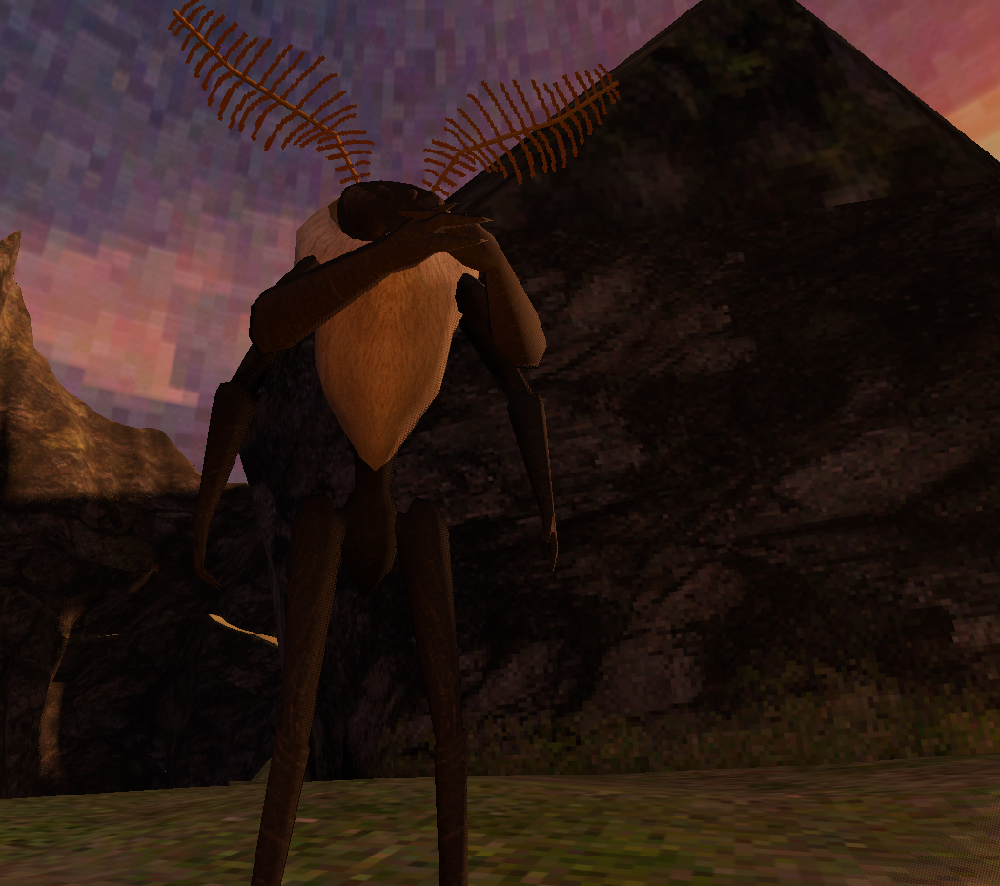
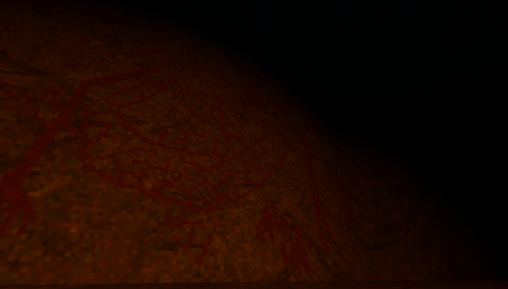
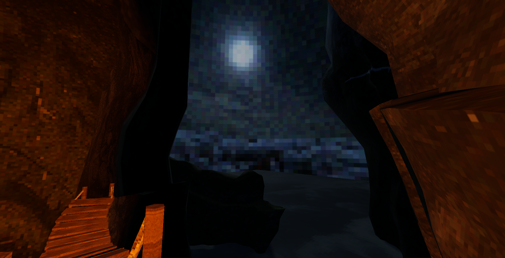

Henry Tripp Barrick
Moth Game
The Goals
Moth Game was intended to be my first finished project as a solo dev. For this I came up with the idea of a very simple project, essentially just a walking simulator. In it the player would go from the bottom of a mountain up to the top, then back down. The cliffside environment was chosen both since most of the retro graphics I had seen in games before were either very tiling focused for the environment or focused more on interior environments. I wanted to try and do this without making it super obvious the environment was tiled. For the engine I used Godot, since I had a little bit of experience in it prior and frankly it seemed less intimidating to start out with.
The Development
Moth Game began development around mid-October and was planned to be completed around early December, matching the quarter system my university used and ended up being around an 8 week development cycle. From the outset my planning on scheduling out how I would make this game was not the greatest. I set essentially no deadlines for myself which meant that I spent a lot of time trying to make "perfect" assets. Trying to do this alongside having a full course load including a senior seminar course meant that I had to scrap a lot of the extra content I initially planned to include. I can (and am going to) give myself somewhat of a break from my own self-critique on this since I was attempting to both make a good game and learn a lot at the same time.
Due to my poor planning and cramped schedule there was a crunch period during the last two weeks of development, where textures were finalized, animations were made and implemented, and just about the majority of gameplay interactions aside from walking were implemented into the game. The game did finish development, with voice lines for the moth character being recorded 30 minutes before the showcase and in a random hallway. The game had more or less the same plot and gameplay as I had started out with, but there was certainly a lot I wish I had the time to improve upon.
As a side note, the game currently has no publicly available download, since I ended up using some sound assets with very poor audio balancing to be heard properly in the showcase studio. I could probably edit this, but likely won't since I would prefer to spend time working on other things.
The Lessons
I learned a lot from this project. Starting off with the more self-explanatory things, I learned a lot about using the Godot engine, importing animations into game engines, using the retro style, audio balancing, and much more. Moving on to more interesting things though, learning how to plan a game was a major lesson for me this project. After completing this I started using production sheets to track what needed to be done and started setting deadlines for myself in order to make sure that aspects of the games I make don't enter perfectionist hell and again to pace the work needed to be done so I don't end up needing to crunch (that hard) again in the future.
One interesting thing I noticed while showcasing the game was how players really seemed to be put off by the lack of a jump in this first person game. I didn't include one since I felt it wasn't really necessary but I could almost hear people wanting to jump around along the cliff face. I think for the future including more options for freedom and choice in how players interact with the game, even if not necessary is something I'll be aware of.
I also gained a bit of experience using the retro style that's been popular as of late (2024). The textures were made in substance painter using the Pixel8r filter by ActionDawg. Previously I had been making retro textures by simply taking images off of the internet, applying them over an image with my UVmaps displayed in GIMP, and then using GIMP to compress the size of the textures to 256x256 or 128x128. This was doable, but also a complete pain to do since I couldn't see how the textures actually looked until I imported the compressed texture file to Blender. I'm sure there's a simpler way than my method, but using this filter was much easier.
More on texturing, trying to make nice looking textures for these very large environmental pieces of geometry turned out to be a bit trickier than I thought. My first try I used trim sheets, which looked quite nice up close but were very obviously repetitive when viewed from a distance, which almost the entirety of my level would be viewed from. I eventually settled on dividing the environmental mesh into multiple sections which would each have their own unique texture to hopefully make it look nicer, which I believe it did. For the parts of the terrain with no collision I used meshes with larger faces. While I think that this turned out ok, I do think that the limited pixel size makes tiling much more apparent and I think the style is probably better suited to interior or constructed environments where the tiling seems a lot more natural.